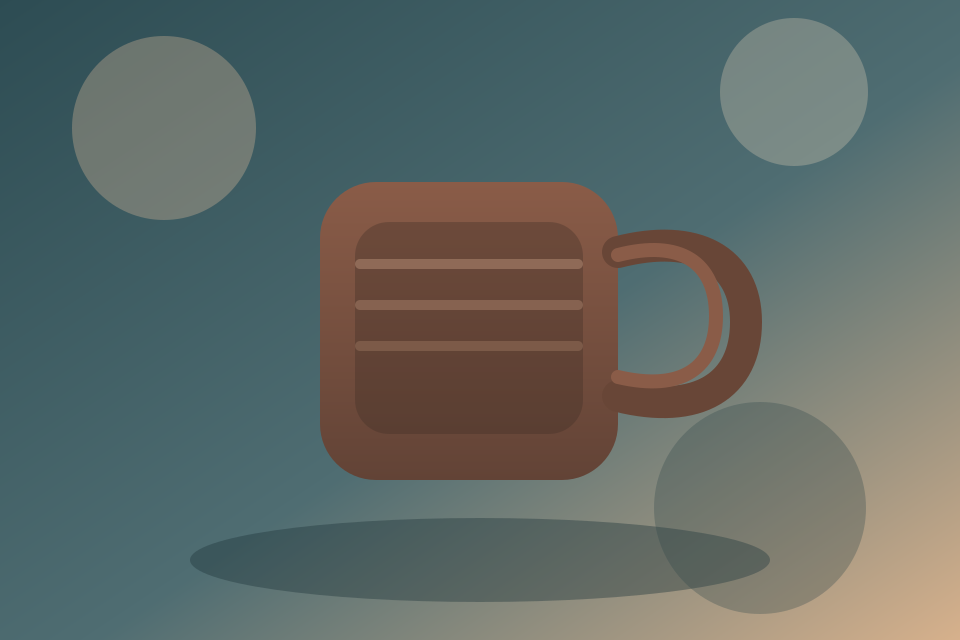
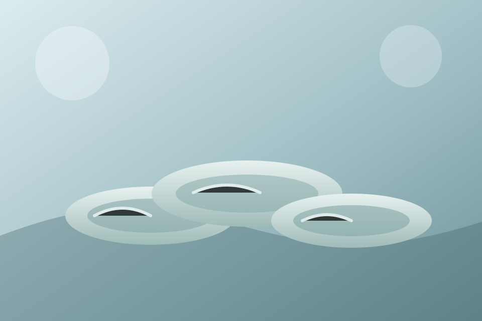
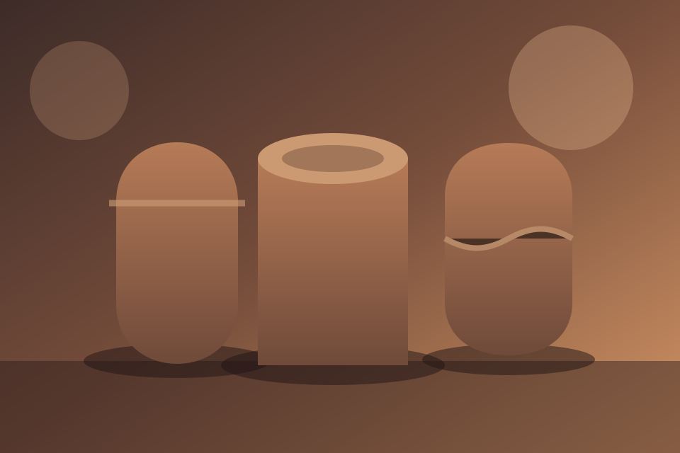
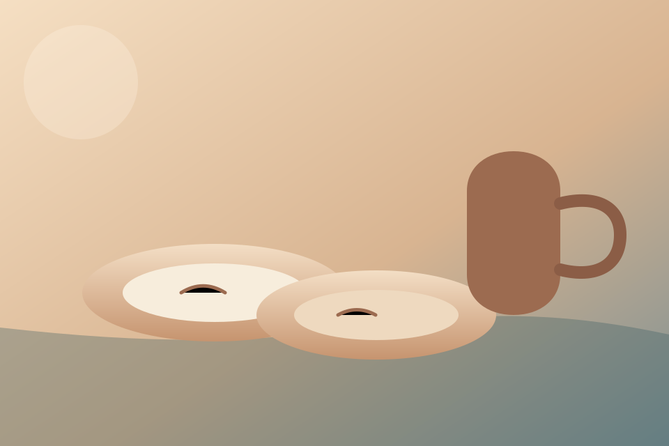
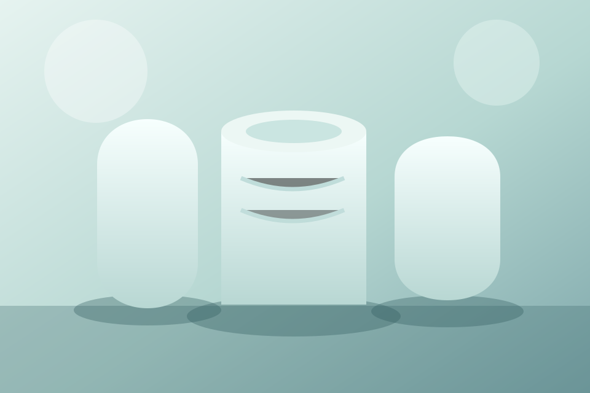
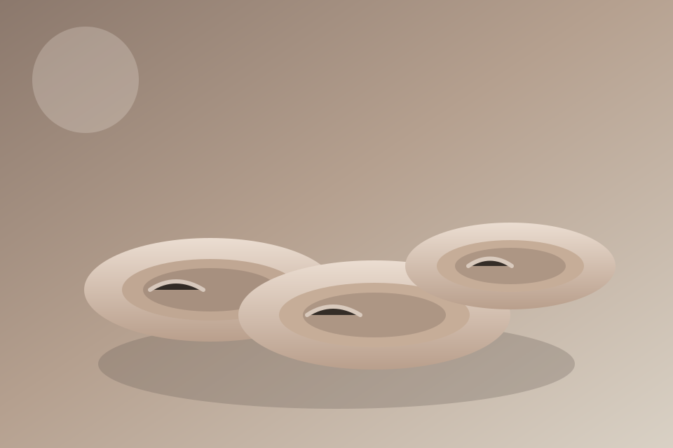

Basalt Mug Series
Textured stoneware inspired by shoreline basalt.
Coastal Community Clay
Yachats, Oregon
Gallery
A rotating collection of work by members, residents, and visiting artists.

Textured stoneware inspired by shoreline basalt.

Soft celadon glazes with carved wave patterns.

Wood-fired forms with natural ash drips.

Everyday sets designed for coastal kitchens.

Delicate porcelain with seafoam tinted glazes.

Layered slips and sgraffito patterns.
Apply for a seasonal showcase or the community market.